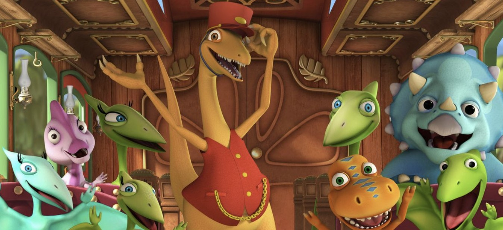

Dinazor Treni
Dinazor Treni,3 ila 6 yaş arası çocuklara yönelik animasyonlu bir çocuk televizyon dizisidir ve Nickelodeon'ın Hey Arnold! dizisininde yaratıcısı olan Craig Bartlett tarafından yaratılmıştır . Dizi, Buddy adında insan biçimli turuncu bir Tyrannosaurus rex'i ve ailesinin geri kalanını konu alarak, Dinazor Treni ile Mezozoik dönemi keşfeder ve çeşitli dinazorlarla maceralar yaşar.
Çizgi film, dinazorlar ve diğer tarih öncesi hayvanlarla dolu ormanlar, bataklıklar, aktif volkanlar ve okyanuslardan oluşan, tuhaf bir tarih öncesi dünyasında geçiyor.
Bu sevilen ve faydalı yapımı sizler de çocuklarınıza izletebilirsiniz.